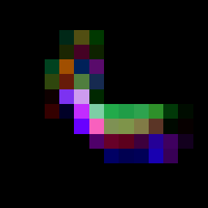

NNConv2d¶
AutoDiff/NN フォルダのパレットです。
説明¶
学習する 2 次元畳み込み層。画像の CHOP を im2col でパッチの列にし、NNLinear で Outchan チャンネルの特徴にする。逆伝播では col2im で画像の形に戻した勾配を outD1 に出す。
入力: in1 画像の CHOP（H·W チャンネル × 色数サンプル。TOPRGB2ImCHOP の出力）
出力
- out1: 出力の画像の CHOP（出力の画素数 チャンネル × Outchan サンプル）
- outInfo: 出力の幅と高さ（wout, hout）。次の層の Win に使う
- outD1: in1 についての勾配（in1 と同じ形）
パラメータ
- Win: 入力画像の幅
- Kw / Kh、Sw / Sh、Pw / Ph: カーネル、ストライド、パディング
- Bias / Outchan: バイアスと出力のチャンネル数
- Lr / Lambda: AdamW の学習率と重み減衰
- D1: out1 についての勾配の CHOP
- Reset: オンの間、重みを初期化し直す
ダウンロード¶
NNConv2d.tox をダウンロード 使用例 NNConv2dExample.toe
.tox はネットワークにドラッグ & ドロップするか、Palette の My Components に入れて使います(使い方)。
入力と出力¶
| 種類 | 名前 | 内容 | |
|---|---|---|---|
| 入力 0 | CHOP | in1 |
Matrix / 画素 × 色 |
| 出力 0 | CHOP | out1 |
Matrix |
| 出力 1 | CHOP | outInfo |
Control / wout hout |
| 出力 2 | CHOP | outD1 |
Matrix / in1 についての勾配 |
パラメータ¶
| Name | Label | Page | Type | Default | Menu / Range |
|---|---|---|---|---|---|
Convolution |
Convolution | Parameter | Header | ||
Win |
Input Width | Parameter | Int | 1 |
1.0 … 128.0 |
Kw |
Kernel Size | Parameter | WH | 1 |
1.0 … 5.0 |
Kh |
Kernel Size | Parameter | WH | 1 |
1.0 … 5.0 |
Sw |
Stride Size | Parameter | WH | 1 |
0.0 … 5.0 |
Sh |
Stride Size | Parameter | WH | 1 |
0.0 … 5.0 |
Pw |
Pad | Parameter | WH | 0 |
0.0 … 5.0 |
Ph |
Pad | Parameter | WH | 0 |
0.0 … 5.0 |
Output |
Output | Parameter | Header | ||
Bias |
Bias | Parameter | Toggle | True |
|
Outchan |
Output Channels | Parameter | Int | 1 |
1.0 … 4.0 |
Learn |
Learn | Parameter | Header | ||
Lr |
Learning Rate | Parameter | Float | 0.001 |
0.0 … 1.0 |
Lambda |
Lambda | Parameter | Float | 0.01 |
0.0 … 1.0 |
D1 |
D1 | D | CHOP | ||
Reset |
Reset | Action | Toggle | False |
使用例¶
畳み込み層の特徴¶

16 × 16 のバナナの画像の CHOP を、3 × 3 のカーネル・出力 3 チャンネルの NNConv2d に通した例です(重みは初期値のまま、D1 は空なので学習はしません)。出力は 14 × 14 画素 × 3 チャンネルで、図はそれを画像に戻したものです。
ネットワーク: banana (moviefileinTOP) → banana_16 (fitTOP: outputresolution=custom, resolutionw=16, resolutionh=16, fit=fitbest, inputfiltertype=nearest, filtertype=nearest) → TOPRGB2ImCHOP (パレット) → NNConv2d (パレット: Win=16, Kw=3, Kh=3, Sw=1, Sh=1, Outchan=3) → ImCHOP2TOPRGB (パレット: Win=14) → enlarged (fitTOP: outputresolution=custom, resolutionw=256, resolutionh=256, fit=fitbest, inputfiltertype=nearest, filtertype=nearest) → out1
手順(AutoDiff/NN/NNConv2d.example.py)
"""畳み込み層の特徴
16 × 16 のバナナの画像の CHOP を、3 × 3 のカーネル・出力 3 チャンネルの NNConv2d に通した例です(重みは初期値のまま、D1 は空なので学習はしません)。出力は 14 × 14 画素 × 3 チャンネルで、図はそれを画像に戻したものです。
"""
import sys
sys.path.insert(0, __file__.split("/palettes/")[0] + "/palettes")
from _examples import image_chop, show_image_chop # noqa: E402
def build(ex, tox):
conv = ex.palette(tox, image_chop(ex, 16), Win=16, Kw=3, Kh=3, Sw=1, Sh=1, Outchan=3)
show_image_chop(ex, conv, 14)
TouchDesigner で読み込んでエラーが出ないことを確認済み(2026-11-04)。
依存プラグイン¶
中で使っている Custom オペレータです。先にプラグインを入れておいてください(プラグインの導入)。
| オペレータ | プラグイン | ダウンロード |
|---|---|---|
CHOP:Col2im |
Col2Im (Col2ImCHOP) | プラグインのページからダウンロード |
CHOP:Dot |
DotProduct (DotCHOP) | プラグインのページからダウンロード |
CHOP:Im2col |
Im2Col (Im2ColCHOP) | プラグインのページからダウンロード |
137 個のオペレータ。sha256: 3659995aa156cd32…